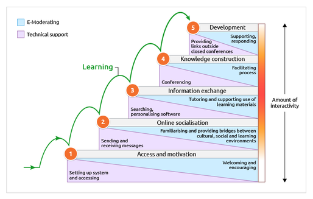

What is Blended Learning? It can be defined as "the thoughtful fusion of face-to-face and online learning experiences…such that the strengths of each are blended into a unique learning experience. Blended learning is a fundamental redesign that transforms the structure of, and approach to, teaching and learning." [Garrison & Vaughan, 2008] In the global context of Higher Education today, we may also consider Blended Learning as the thoughtful fusion of synchronous and asynchronous learning experiences.
When designing blended curriculum, it is worthwhile considering the Seven Principles for Good Practice in Undergraduate Education [Chickering & Gamson, 1987], and how we can use technology to implement these principles [Chickering & Ehrmann, 1996]. Good practice in Higher Education can be represented by the following principles:
1. Encourages contact between students and faculty
2. Develops reciprocity and cooperation among students
3. Encourages active learning
4. Gives prompt feedback
5. Emphasises time on task
6. Communicates high expectations
7. Respects diverse talents and ways of learning
These principles can be implemented via effective blended learning and planning of tasks, communicating to students clearly and consistently, and providing the platform for students to interact and collaborate. Now let’s expand on the seven principles:
Frequent student-faculty contact leads to student motivation & involvement. Consider:
• Frequent LMS Announcements
• Use of Discussion Boards
• Using Social Media Channels
Good learning is collaborative & social – sharing ideas deepens understanding. Consider:
• Grouping tools
• Discussion Boards
• Blogs
• Collaborative tools i.e. OneDrive, Google Docs, Wiki’s, Padlet etc.
Students must talk and write about what they are learning – relate and apply. Consider:
• Blogs
• Learning Journals
• Video Activities (uRewind)
• Reflection & linking to real-world examples
Students need regular feedback & reflection to know what still needs to be learned. Consider:
• Assessment tools
• Knowledge Checks
• Quizzes (MCQ)
• Student Response Systems i.e. Kahoot! Yo Teach!
• Gamification
Allocating time equals effective learning for students. Consider:
• Link to External Resources
• Integrate Open Educational Resources (OERs)
• Link to Library reading lists
• Help students plan their time independently
Expect students to do well – help them expect to do well. Consider:
• Encourage and facilitate Peer-based learning
• Post draft assignments to discussion forums
• Design peer-assessment activities
Students need the opportunity to show their talents. Consider:
• Extra resources on LMS E for those who need them
• Use Adaptive release to unlock content
• Use course Mentors
Check out the Blackboard Series Tutorials
The Five Stage Model: A Framework for Structured Activities
The Five Stage Model was developed by Professor Gilly Salmon. For additional resources, please visit https://www.gillysalmon.com/
For online learning to be successful and happy, participants need to be supported through a structured developmental process. The Five Stage model provides a framework or scaffold for a structured and paced programme of e-tivities. The Five Stage model offers essential support and development to participants at each stage as they build up expertise in learning online.
• The model is a “scaffolding” model
• Scaffolding means gradually building on participants' previous experience
• A structured learning scaffold offers essential support and development to participants at each stage as they build up expertise in learning online
• Purpose of creating greater interaction and participation between participants in blended/online courses

Reference: The Five Stage Model diagrams and Carpe Diem resources on the Digital Learning pages are licensed under a Creative Commons Attribution-NonCommercial-NoDerivatives 4.0 International (CC BY-NC-ND 4.0) license.
Let us look at the levels more closely:
1. Access and Motivation – welcoming and encouraging
Students need access and purposeful reasons to take part. Ensure access is easy with processes and systems in place. Ensure motivation of generated and regularly topped up.
2. Online Socialisation – familiarising and providing bridges between social, cultural, and learning environments
Students establish their personal identity within the learning group – they find others to learn from and work with. Teacher creates micro community through active and interactive teaching and learning – teachers create the opportunities.
3. Information Exchange – tutoring and supporting use of learning materials
Learners engage in mutual exchange of information and make their own course related contributions. Teacher plans course design with focus on LOs, pedagogical objectives, and interaction with the group. In Stage 3, co-operation from students will be established and peer-peer collaboration starts.
4. Knowledge Construction – facilitating process
Group goals established with more complex activities and contributions expected. Design for students to be contributors to the course and not consumers of knowledge. Teachers can start to be more ambitious in activities and expect more creativity from students. Students happier and more successful if Stages 1-3 followed.
5. Development – supporting and responding
Students comfortable in working together and get benefits of working together. Teachers integrates activities for students to take more responsibility and reflect on that they have learned in previous stages. It is good design to prepare students for learning about ‘how’ they are learning. Develop independent learners. Reflection and evaluation of the learning experience is essential.
e-Tivities
e-Tivities are online activities which may be synchronous or asynchronous. Principles for building e-tivities include:
• Decide well in advance what e-tivities a programme or course will include
• Define the ILOs and design the e-tivities to support students in meeting these ILOs (Constructive alignment)
• Build motivation as part of the process – make the e-tivity worthy of students' participation. Ensure a satisfying flow of actions and link to short-term goals.
• Make e-tivities ‘bitesize’ and achievable for students – don’t make them too big of a task (or make them a burden)
• If you offer multiple e-tivities at a time – make sure they interlink and connect to form a bigger learning sequence
• Ensure students focus is on deeper understanding and/or elaborating on a point of view – giving peer feedback
• Provide clear instruction and guidance from first point of entry
Now, for each level, e-tivities must:
LEVEL 1 e-tivities must:
• Provide motivation and set the tone of the course
• Be designed to enable growth in confidence
• Not be too authoritative – make students comfortable in the environment/task
LEVEL 2 e-tivities must:
• Focus on students making connections
• Provide practice in working together (pairs/groups)
• Be related to your discipline for easier knowledge construction at later stages
LEVEL 3 e-tivities must:
• Have a strong task/action focus – prioritise content
• Show students how to give feedback to each other
• Experiment with the structure of groups and techniques for group working
LEVEL 4 e-tivities must:
• Cater for students being more self-directed
• Broaden understanding, perspectives, and examples
• Move towards peer-directed activities and self-direction within groups
LEVEL 5 e-tivities must:
• Help students reflect and gain personal insight
• Enable evaluation and critical reflection
• Help students develop their meta-cognitive awareness of positions they adopt
How to Start with e-Tivities
Start with the end in mind
What do you want to achieve with this activity? How will it add to student learning? How will you assess/evaluate the e-tivity?
First things first
How will you introduce and start the e-tivity? How much notice is needed, and can you devise a clear invitational message (announcement)?
Think win-win
Why will people want to take part? Will it add clear and obvious value to their learning? How will the group dynamic work?
Sharpen the saw
How will you prepare yourself? What preparations or resources will students need to take part?
Be proactive
Plan your eModerator role – how often will you need to intervene? Be prepared to be flexible. What will you do about non-participation?
Seek to understand
What happens if things don’t go to plan? How can you gather information and feedback to improve?
eModerate
Have a clear plan for what you need to do while the e-tivity is ‘live’ and in progress – be prepared
Reference: A pedagogical model for e-learning: “The five-stage model of online learning" by Gilly Salmon https://itlc.science.ku.dk/english/papers/model/ A summary of: Salmon, G.: "E-tivities. The Key to Active Online Learning",Taylor & Francis, 2002. Salmon, G.: "E-moderating. The key to teaching and learning online", Routledge Falmer, 2000 (second edition 2005). https://www.gillysalmon.com/carpe-diem1.html
Additional Resources & References
Building Engaging Online Learning: QuickStart Guide
https://www.polyu.edu.hk/onlineteaching/
Implementing the Seven Principles: Technology as a Lever - Arthur W. Chickering and Stephen C. Ehrmann, 1996 https://www.researchgate.net/publication/246430027_Implementing_the_Seven_Principles_Technology_as_Lever
The Five Stage Model – Professor Gilly Salmon
https://www.gillysalmon.com/five-stage-model.html
Making Online Learning Active - Steven Mintz, Inside Higher Ed (Article)
https://www.insidehighered.com/blogs/higher-ed-gamma/making-online-learning-active
Active Learning while Physical Distancing 2.0 – Salim, Z. (2020).
https://docs.google.com/document/d/16PpcXB5Z9e8WiFwYcIMfFLv2BQidY-GzC22VXttzonk/preview?pru=AAABc-cU5MA*4mUklh971od76ySpMRPVjw